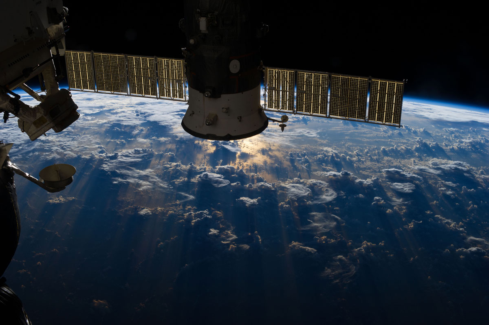
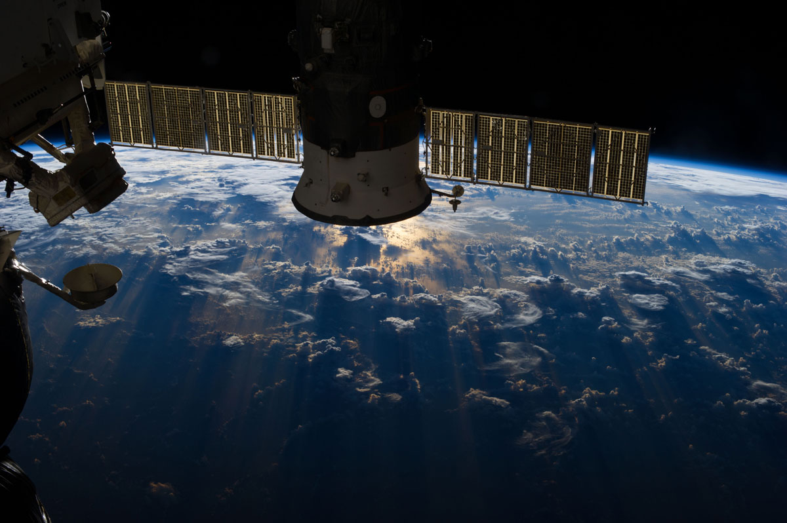
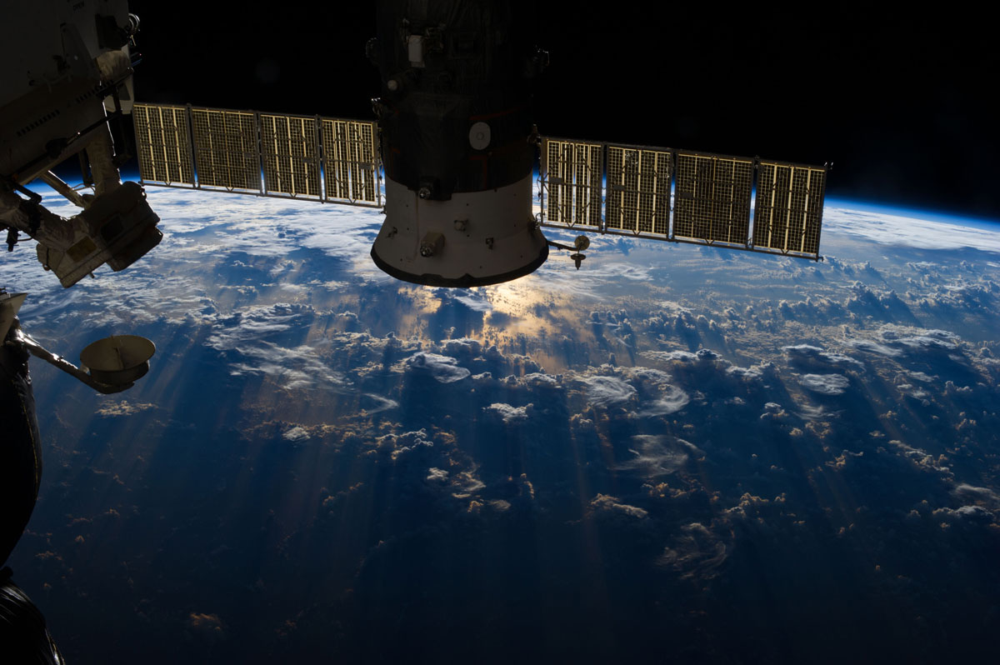

International Space Station Facts
Highlights
• The International Space Station is a large spacecraft. It orbits around Earth. It is a home where astronauts live. The space station is also a science lab.
• Sixteen nations were involved in the construction of the ISS: The United States, Russia, Canada, Japan, Belgium, Brazil, Denmark, France, Germany, Italy, the Netherlands, Norway, Spain, Sweden, Switzerland, and the United Kingdom
• The first piece of the International Space Station was launched in 1998. A Russian rocket launched that piece. After that, more pieces were added. Two years later, the station was ready for people. The first crew arrived on November 2, 2000. People have lived on the space station ever since. Over time more pieces have been added. NASA and its partners around the world finished the space station in 2011.
• The space station is as big inside as a house with five bedrooms. It has two bathrooms, a gymnasium and a big bay window. Six people are able to live there.
• The space station is a home in orbit. People have lived in space every day since the year 2000. The space station's labs are where crew members do research. This research could not be done on Earth. Scientists study what happens to people when they live in space.
• The space station orbits Earth every 90 minutes, which is about 16 times in a day. It travels at 5 miles per second.
• The ISS is the single most expensive object ever built. The estimated cost is about $120 billion.
• Currently, the ISS is the third brightest object in the night sky after the moon and Venus
• Because the human body tends to lose muscle and bone mass in zero gravity environments, all astronauts aboard the ISS must work out at least two hours a day to maintain normal Earth-based bodily health>
GALLERY
Images taken from International Space Station


 



GALLERY
Images taken from International Space Station
